Chapter 1: The Age of Idea Toys (1966–1980)
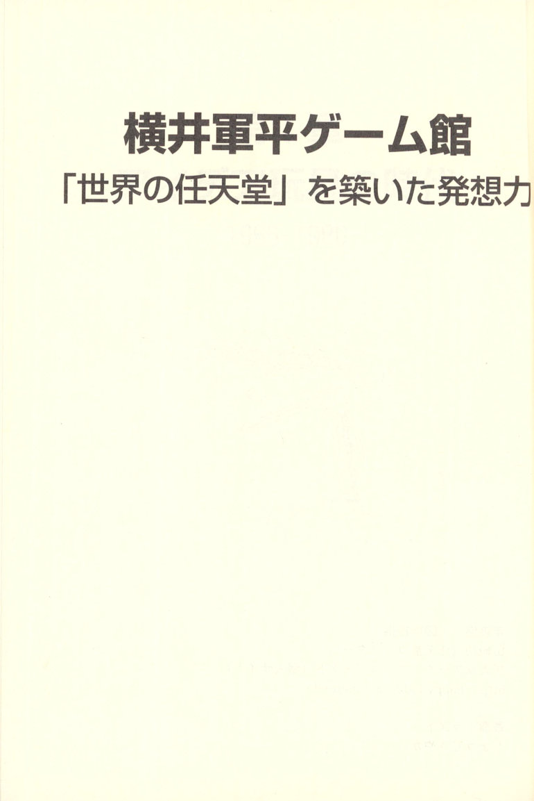
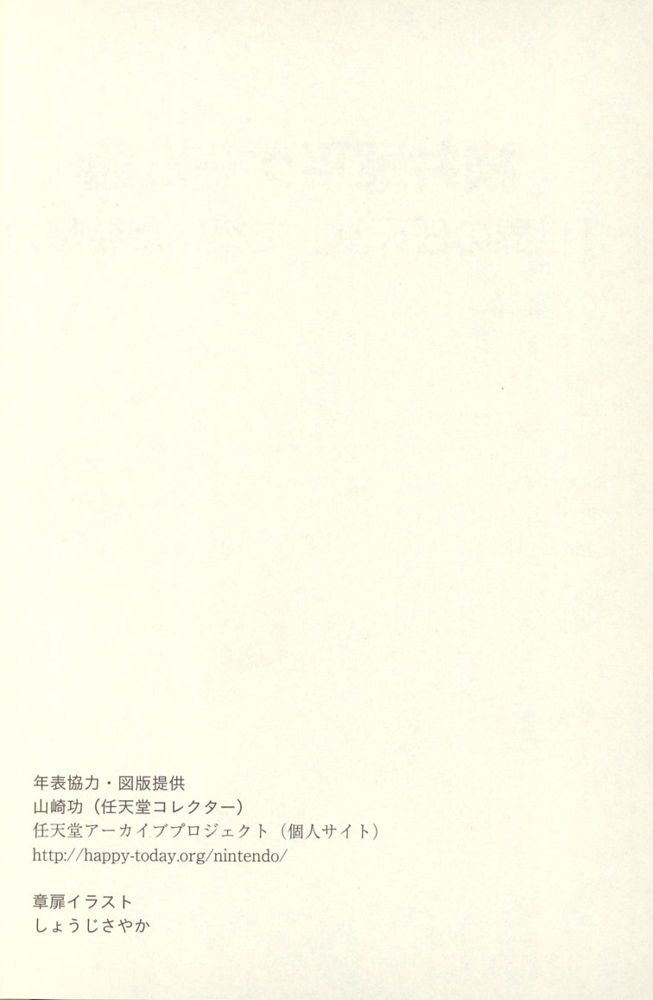
Isao Yamazaki (Nintendo Collector)
Nintendo Archive Project (personal site)
http://happy-today.org/nintendo/
Chapter illustrations:
Sayaka Shoji
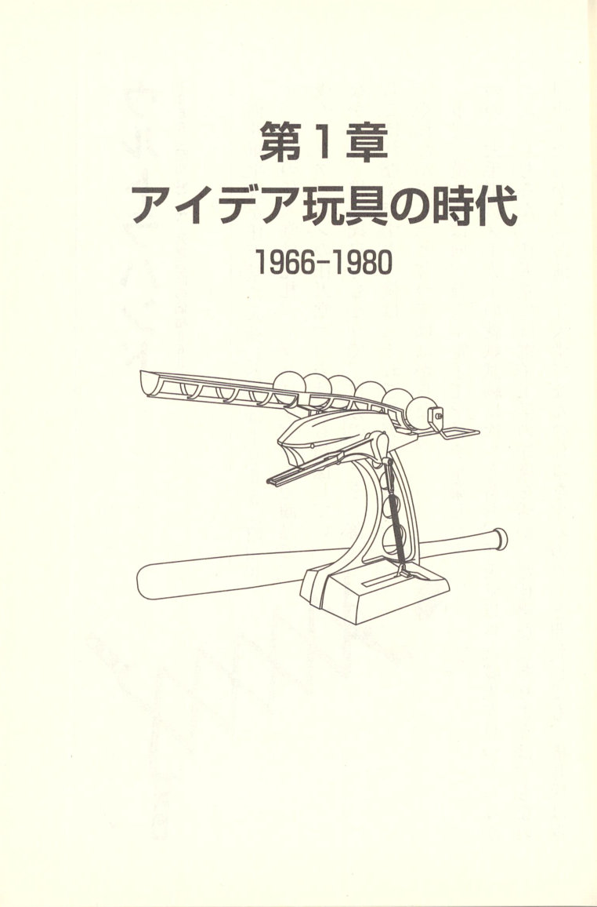
The Age of Idea Toys
1966–1980
[IMAGE: Line drawing illustration of a mechanical baseball pitching machine toy, showing a ball-feeding ramp loaded with balls and a bat arm on a stand]
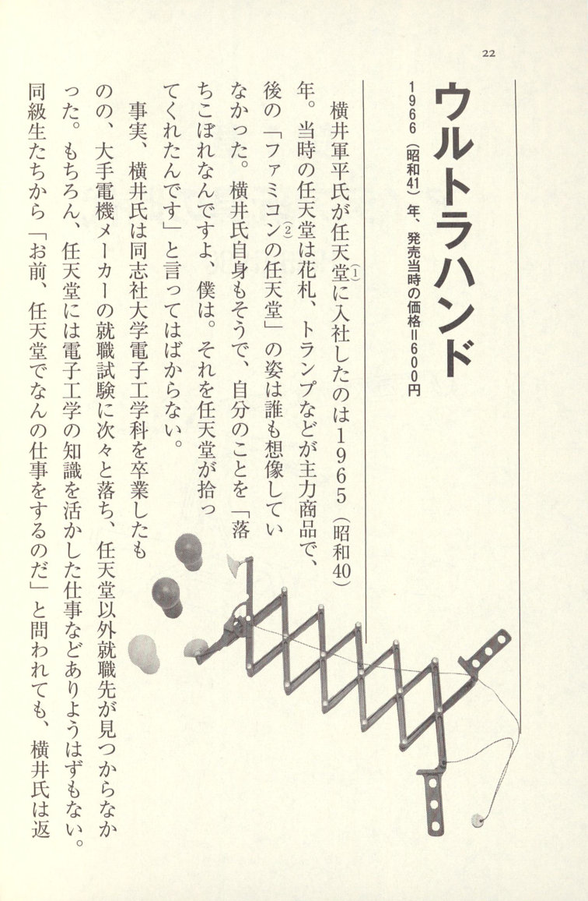
1966 (Showa 41). Price at launch: ¥600
[IMAGE: Photograph of the Ultra Hand toy — a scissor-linkage extendable mechanical grabber arm with a handle on one end and gripping mechanism on the other, shown with several small balls]
Gunpei Yokoi (横井軍平) joined Nintendo in 1965 (Showa 40). At the time, Nintendo's main products were hanafuda cards and playing cards — no one could have imagined the company it would later become with the Famicom. "I was picked up by Nintendo," Yokoi says of himself. In truth, after graduating from the electronics engineering department of Doshisha University, he had failed the employment examinations at major electronics manufacturers one after another and found no other prospects. Of course, when his classmates asked him, "So what do you do at Nintendo — do they even have electronics work there?" Yokoi replied,
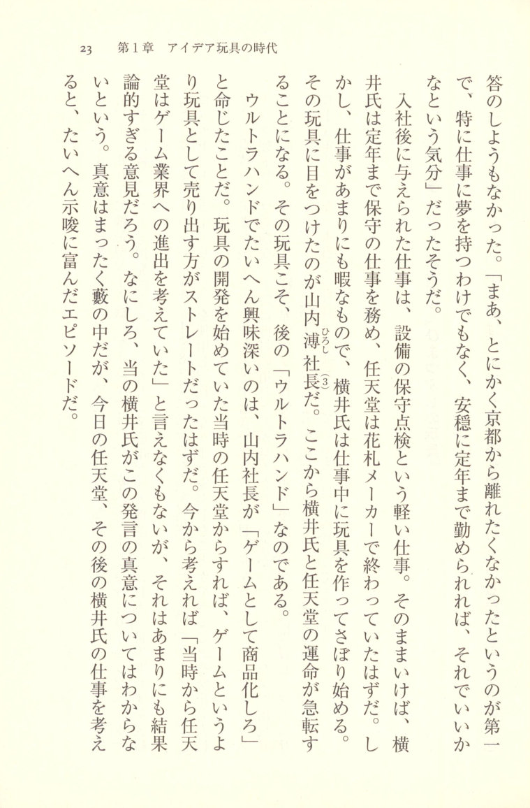
The job he was given after joining the company was facility maintenance — light work like equipment inspections and time-clock management. If he had simply stayed the course, he would have spent his career at a playing-card manufacturer doing maintenance until retirement. But Yokoi had too much time on his hands at work, and it was there that he began tinkering and making toys. That is where Yokoi's fate and Nintendo's fortunes took a sudden turn. Here, Yokoi and Nintendo's destiny intersect.
The toy that caught his eye was none other than the Ultra Hand, which would later become the "Ultra Hand." What makes it particularly fascinating is that Nintendo's president at the time, Hiroshi Yamauchi, ordered him to "commercialize it as a game." The toy itself was something Yokoi had begun developing to pass the time — and it goes without saying that Yamauchi's directive to sell it as a toy was straightforward enough. From today's perspective, if you think about it, "Nintendo back then was already considering expanding into the game industry" — that statement is not entirely wrong, but it is also somewhat too on-the-nose as an opinion. The true meaning of Yamauchi's words, and what Yokoi subsequently made of his work, lies buried deep in the thicket. This is an episode rich in profound implications.
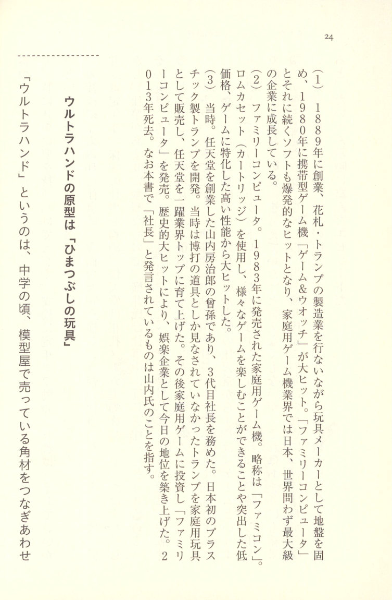
The Ultra Hand's prototype was a "pastime toy"
The prototype of the Ultra Hand was, during his middle school years, assembled from square timber sold at model shops —
"The Ultra Hand," that is — it was during middle school, using square stock sold at hobby shops, pieced together
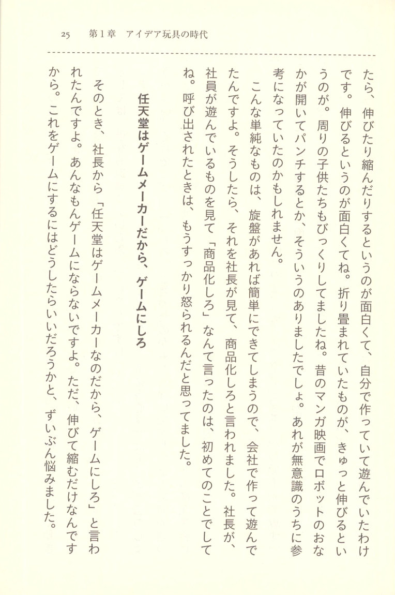
Something this simple, if it had a turntable it would be easy to make — so I made it at the company and showed it to employees playing with it, and the president said, "Turn it into a product." I was told to commercialize it. The president saw it and said to turn it into a product, and when employees were gathered around playing with it, that was the first time such a thing had happened.
"Nintendo is a game maker, so make it a game"
At that point, the president said to me, "Nintendo is a game maker, so make it a game — make it a game." I was told to make it a game. But all it does is extend and retract, so I agonized quite a bit over how on earth to turn this into a game.
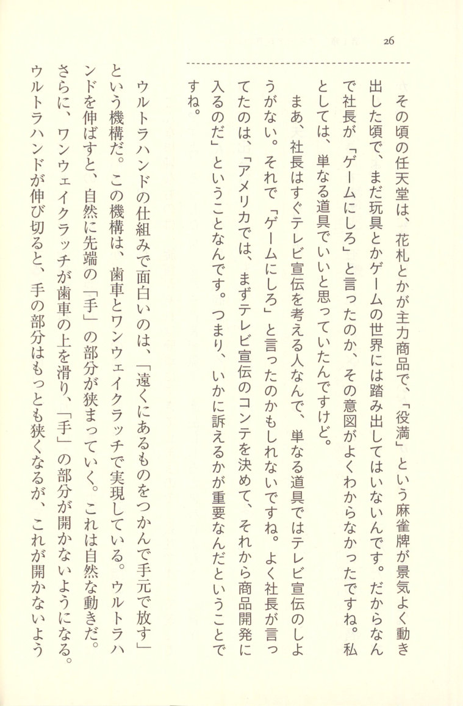
In America, the first thing they say is "advertise it on television." That's what it means. In other words, how effectively you can appeal to people through a television commercial is what's most important, apparently.
What's clever about the Ultra Hand's mechanism is that it "grabs something far away and releases it by hand." This mechanism is realized by the rack and worm gear. The Ultra Hand naturally moves so that the tip — the "hand" part — narrows as the worm gear narrows it. This is natural movement. Furthermore, when you extend the Ultra Hand, the worm gear slides over the top of the "hand" part, naturally causing it to open; and when the Ultra Hand is fully extended, the "hand" part opens — but then it won't close —
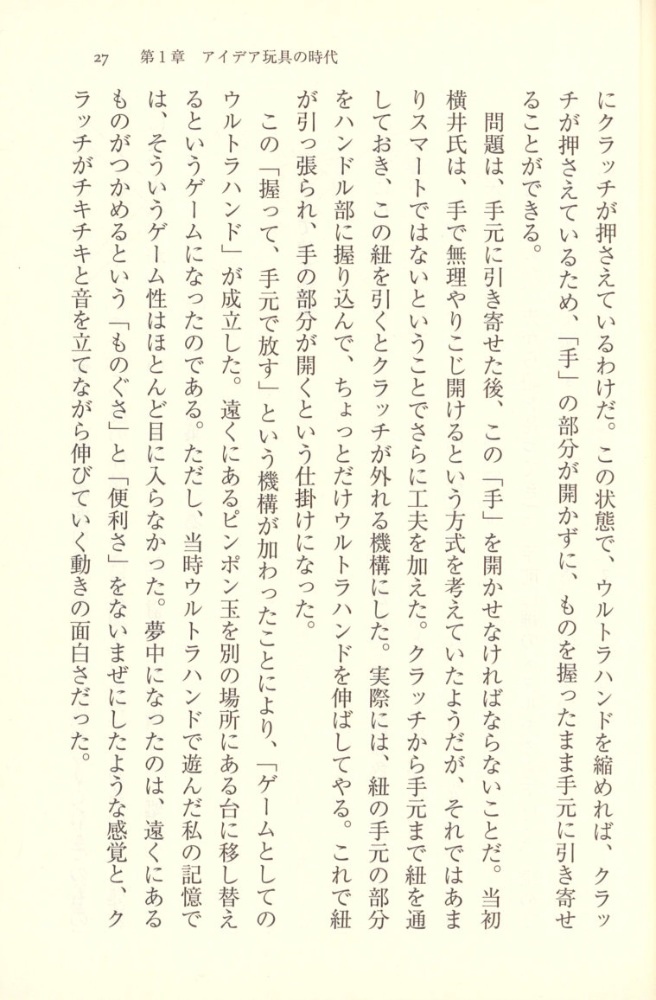
The problem is that you can't open the "hand" part once you've pulled it back toward you. At first, you had to open it by hand — which wasn't exactly clever. But Yokoi came up with an ingenious mechanism: by running a cord through the handle section, you could open the "hand" part from a distance using the cord. In practice, by threading the cord through the handle section and then pulling it, you could extend the Ultra Hand and release whatever it was holding. This meant the cord was now threaded through, and the "hand" part would open when you pulled it — and with that addition, the mechanism became complete.
Because of this, the product succeeded as a "game." Far away, on a platform somewhere, you could place a ping-pong ball and then move it somewhere else — and with that, it became a game. The game element had been added. At the time, I was so absorbed in the Ultra Hand that, looking back on it now, I have memories of playing with it far away, and a sense that the latch clicking and catching as it extended, the feeling of being unable to mix "fun" and "convenience" together — the enjoyable movement of reaching out and pulling back while the latch went click-click-click — that was what it was all about.
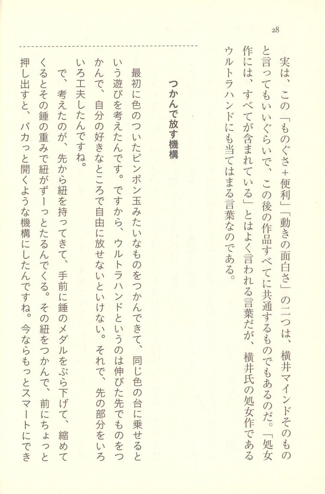
The Grip-and-Release Mechanism
The first thing I was able to do was pick up colored ping-pong balls and place them on platforms of matching colors — that was the game. So, with the Ultra Hand, you have to be able to release whatever you've grabbed at the far end. That meant I had to come up with all kinds of ways to freely release things at the tip. What I devised was this: I ran a cord through from the front, so that when you pull it toward you, a medal-shaped piece dangles down at the near end, and when you compress it, the cord goes slack. You grab that cord at the near end, pull it slightly forward, and — clack — it opens up. That's the mechanism I came up with. Even now it could be done more elegantly,
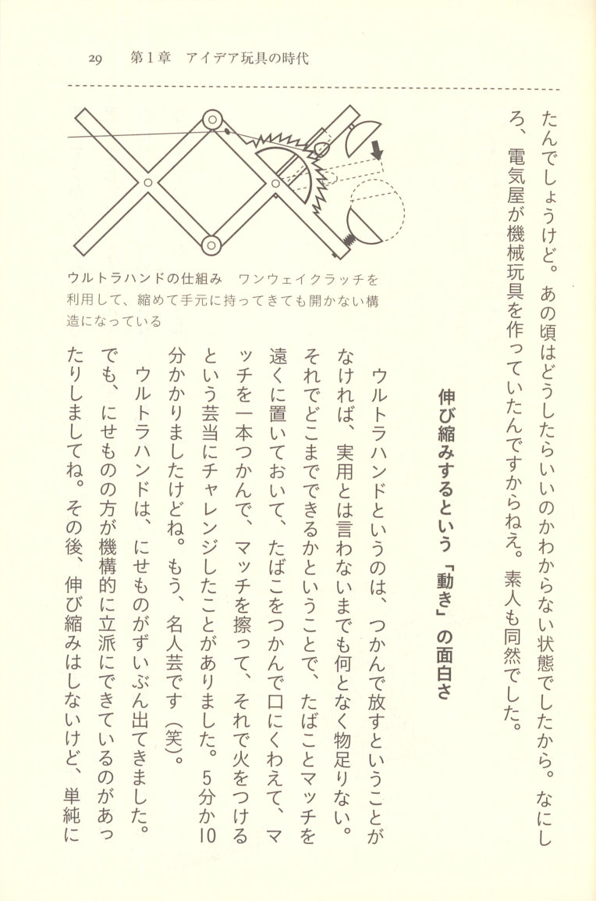
[IMAGE: Technical diagram of the Ultra Hand mechanism, showing the scissor-arm extending structure with a gripping claw at the end. Caption reads: "The Ultra Hand mechanism — uses a one-way clutch so that when compressed and pulled back toward the user, it doesn't open."]
The Fun of "Movement" — Extending and Retracting
The Ultra Hand, in terms of pure practicality, isn't really all that useful — you can grab things and release them, but it can't actually reach very far. Still, just being able to pick something up and place it somewhere was enough. You'd pick up a cigarette, hold it up to your mouth, and light it with a match — and that match could be placed five or ten centimeters away, which was something of a party trick. (Laughs) It became a little performance. There was even someone who worked that into an act.
But the Ultra Hand — even though it's something of a fake, its mechanism is actually quite well-engineered, and that's what I'm proud of. After that, it stopped extending and retracting properly, but simply
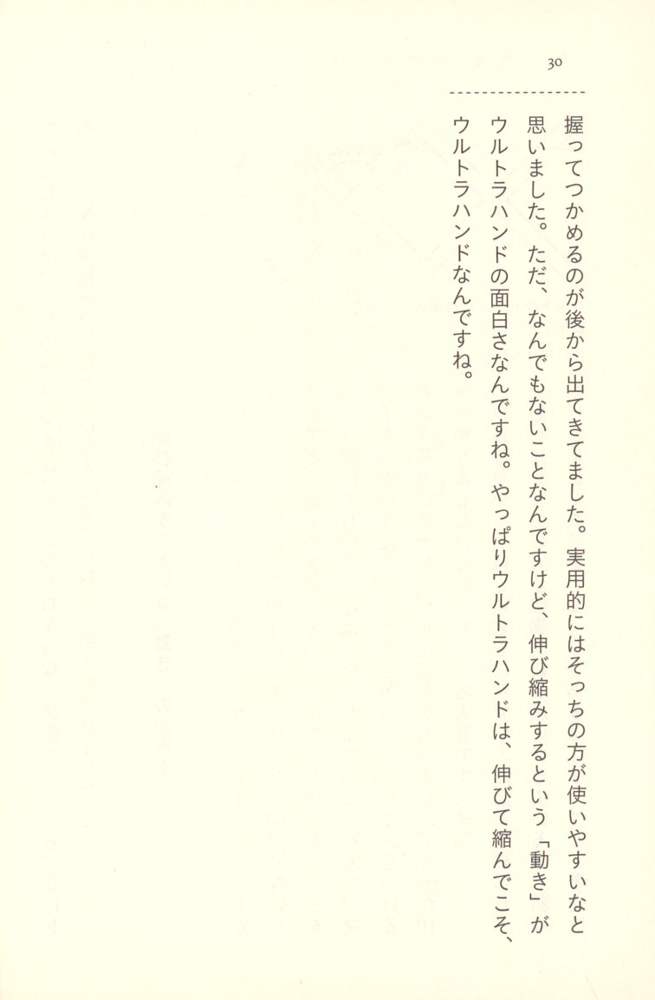
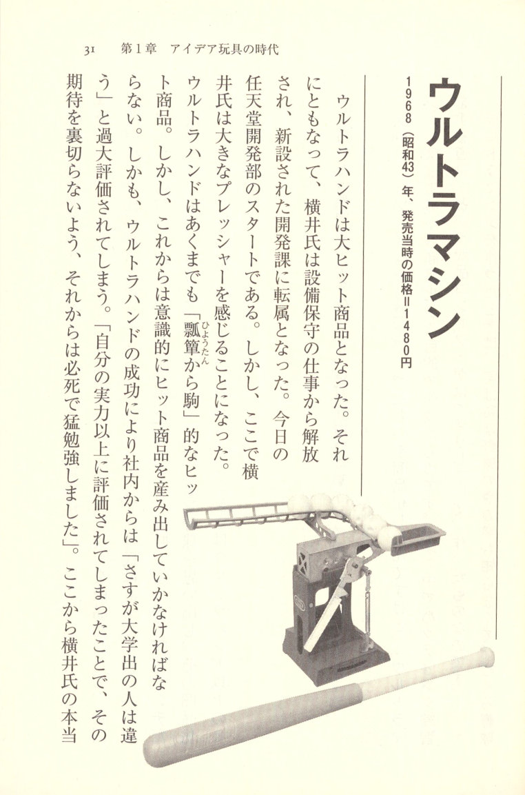
1968 (Showa 43). Price at time of release: ¥1,480
The Ultra Hand became a massive hit product. With that, Yokoi was released from his maintenance duties and transferred to the newly established development division — Nintendo's development department was just getting its start. Today, however, Yokoi felt a great deal of pressure. The Ultra Hand was, after all, a product that had emerged almost by accident — a "fluke," you might say. From here on, he would have to keep producing hit products intentionally. But the Ultra Hand had been so wildly successful that within the company people began saying things like, "Well, what do you expect from a college graduate" — and he was being evaluated at a level beyond his actual abilities. "I've been overrated," he thought. "I can't betray those expectations. From here on, it was do or die — I studied with furious determination." And this is where Yokoi's true
[IMAGE: Photograph of the Ultra Machine — a mechanical pitching machine device with a batting tee and bat, shown against a white background]
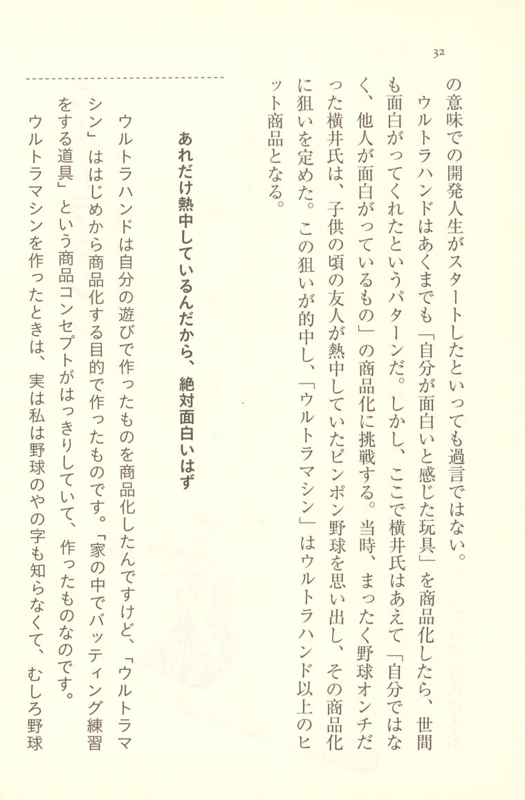
If the Ultra Hand — a toy he had found enjoyable himself — could be turned into a commercial product and become a hit with the world, then other people must find it enjoyable too. That was the pattern. But here, Yokoi deliberately chose to challenge himself with something he personally found completely uninteresting: baseball. At the time, Yokoi recalled the ping-pong balls that a friend of his son's had been so crazy about, and set his sights on commercializing them. The Ultra Machine would go on to become an even bigger hit than the Ultra Hand.
"I'm so passionate about it — it's absolutely got to be fun"
The Ultra Hand was something he had made for his own amusement and then commercialized. "I made it for myself, so it's a 'batting practice machine for the home' — an 'Ultra Training Machine,' if you will. It's something for the home." The product concept came together from there. When he made it, he actually knew nothing about baseball — not even the word "yakyuu" — and was more of a
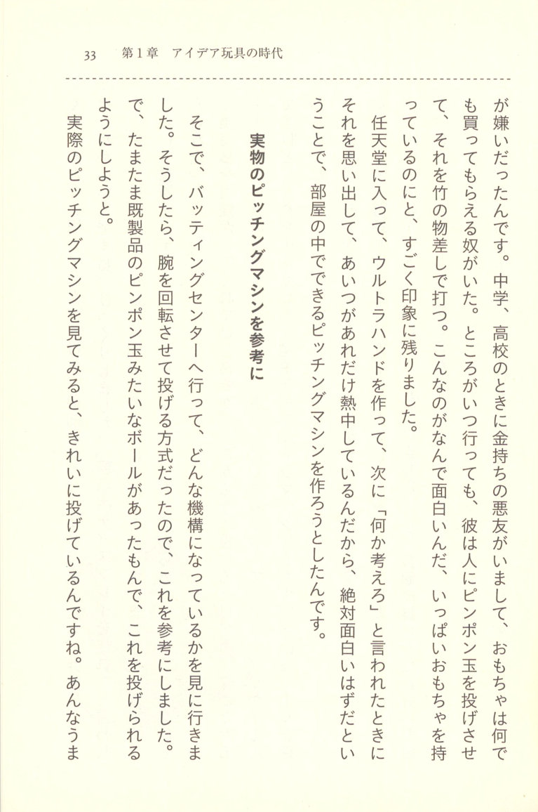
Still, when he joined Nintendo, the Ultra Hand left a strong impression on him. Next, when he was told "Think of something — it's absolutely got to be fun," he remembered how his son's friend had been so crazy about those ping-pong balls, and decided to try making a pitching machine that could be used right in the bedroom.
Using a Real Pitching Machine as Reference
So he went to a batting center to see what kind of mechanism was being used. It turned out to use a spinning-arm style that could throw a ball like a ping-pong ball, so he used that as his reference. When he actually tried spinning the arm and throwing, it threw beautifully — a nice, clean pitch. "It throws so well," he thought.
When he looked at actual pitching machines, he found they threw
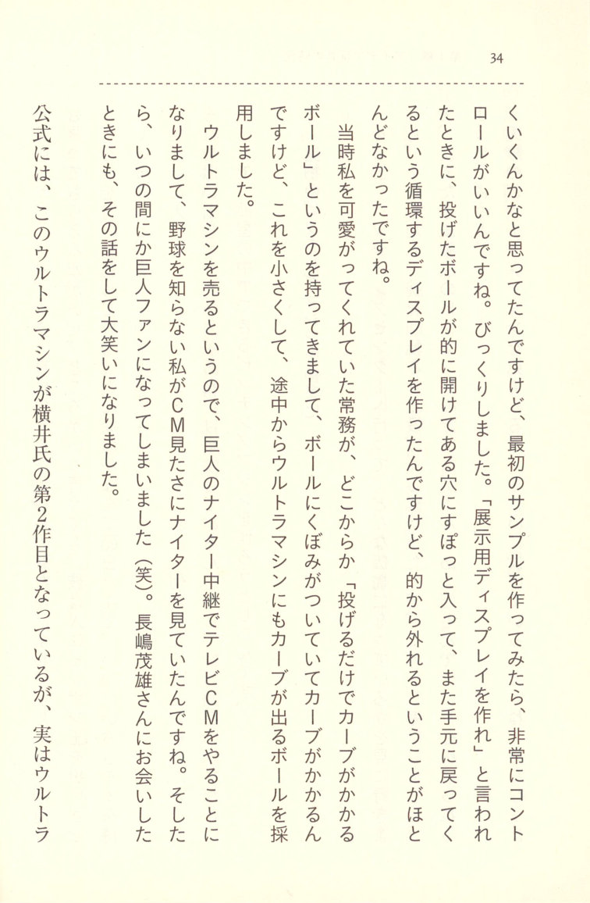
In order to sell the Ultra Machine, they decided to run commercials during the Yomiuri Giants' night games on television. He, who until then had known nothing about baseball, ended up becoming a Giants fan. Before he knew it, he was watching the Giants' night game broadcasts to see the commercials. (Laughs.) That's how he got to meet Shigeo Nagashima in person.
Officially, this Ultra Machine became Yokoi's second product, but in fact the Ultra
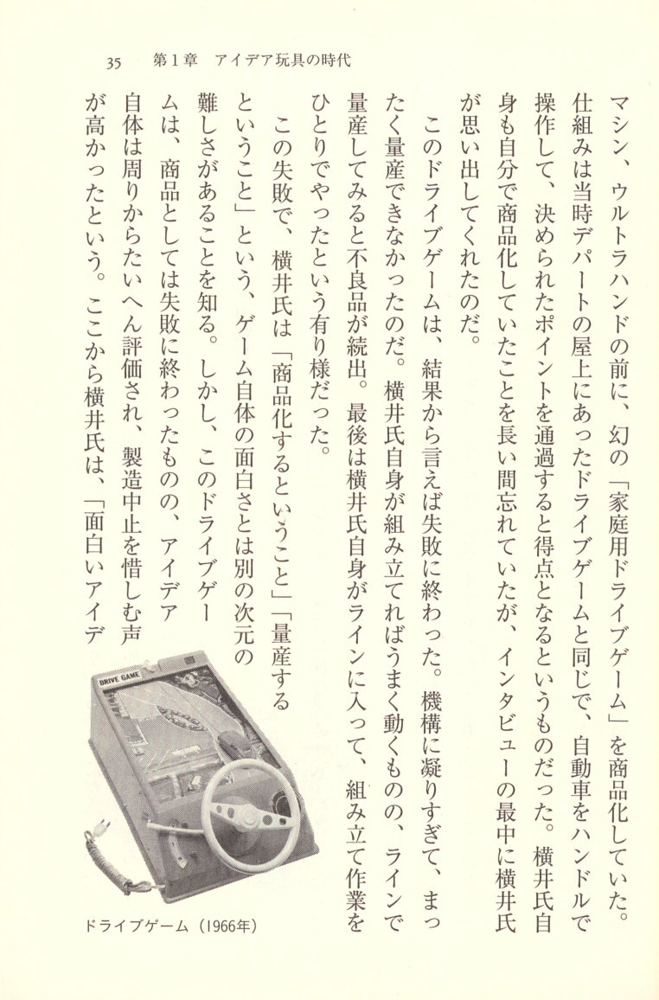
This driving game was a failure, to put it in Yokoi's own words. The mechanism was too elaborate, and while it moved well enough when assembled by hand, mass production proved impossible. Defective units kept coming off the line. In the end, Yokoi himself went into the assembly line to try to get things working, and spent his time doing assembly work.
This was the failure, and Yokoi learned from it that "making something into a product" and "mass-producing something" are entirely different things. However, this driving game's interest as a product belongs to a different dimension — that of "mass-producing it," he says. The product itself ended up a failure, but the ideas were highly regarded all around, and voices lamenting that production had been halted came in from everywhere. From this point on, Yokoi became a man of "interesting ideas —
[IMAGE: Photograph of the Drive Game (1966)]
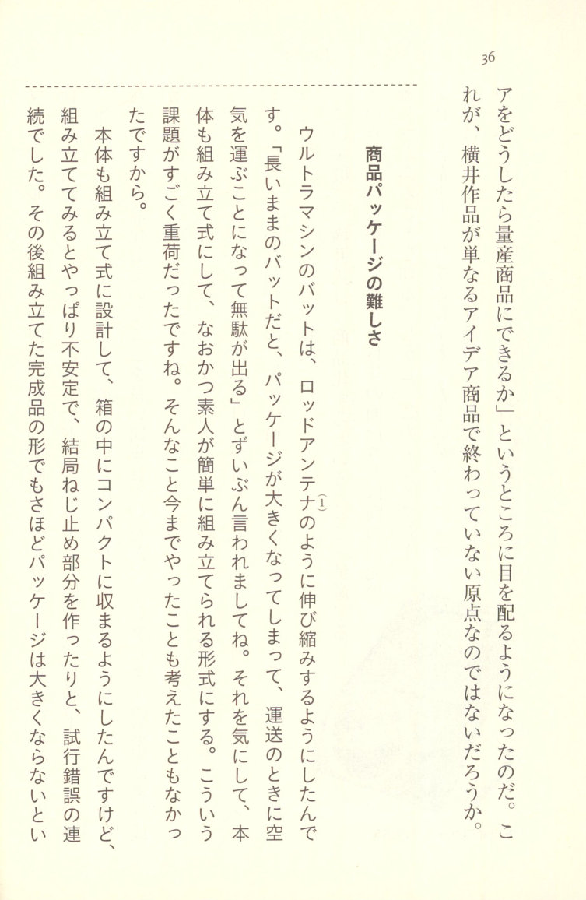
The Difficulty of Product Packaging
The bat of the Ultra Machine extends and retracts like a rod antenna, and when shipping it, the packaging ended up becoming quite large. "If you leave the bat as it is, the package gets huge," he says. So they made the packaging take into account that space, with the assembly-type format — meaning a layperson could easily assemble it. This kind of assembly format, however, turned out to be an enormously heavy burden. "The assembly challenge was really quite serious, you know. And on top of that, it had to be something even a complete amateur could put together easily." This was something they had never considered before. So they designed the unit itself to fit compactly inside the box, made parts to hold the screws in place, and through trial and error continued assembling. When they tried assembling it that way, it was still unstable, and the finished product once assembled was just as large as the package — it couldn't be made any smaller, and the
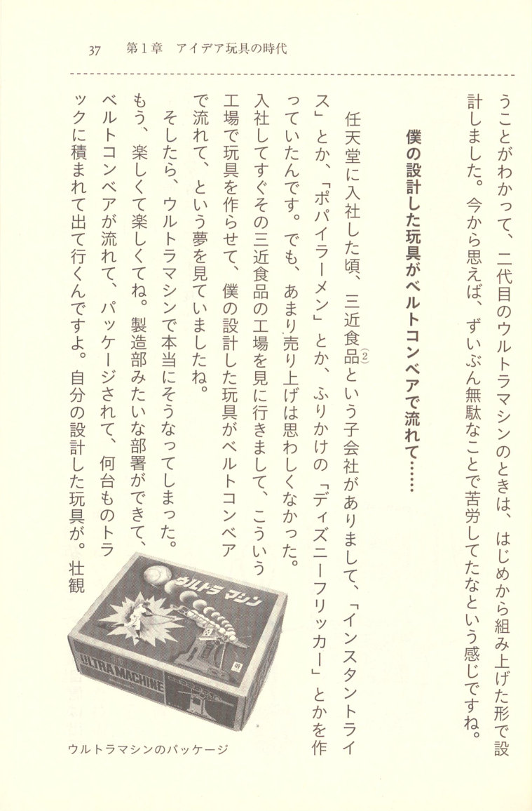
The Toys I Designed Flowing Down a Conveyor Belt…
Around the time I joined Nintendo, there was a subsidiary company called Mitsuchika Shokuhin, and they were making things like "Instant Try-S," "Popeye Ramen," "furikake" called "Disney Flicker," and so on. But sales weren't very good, so I went to visit their factory — one of those food factories nearby — and, well, seeing that kind of thing, the toys I had designed were flowing along the conveyor belt, just like this. They'd been licensed out, and I watched my dream being realized: the toys I had designed were on a conveyor belt at the factory, being cheerfully, happily manufactured — it had truly become a full-fledged production operation. And then with the Ultra Machine as well, I felt the same way. The manufacturing process had turned into something like a proper department, with trays flowing along, packages being made, and any number of units of the products I'd designed piling up on the trucks and heading out. Seeing your own designed toys — it's a magnificent sight.
[IMAGE: The Ultra Machine box packaging]
*Ultra Machine packaging*
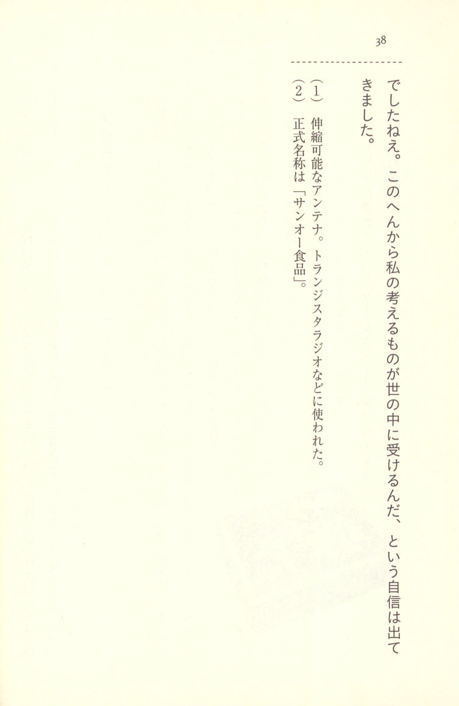
(1) A retractable antenna, used in transistor radios and the like.
(2) The formal company name is "San-O Shokuhin (三オー食品)."
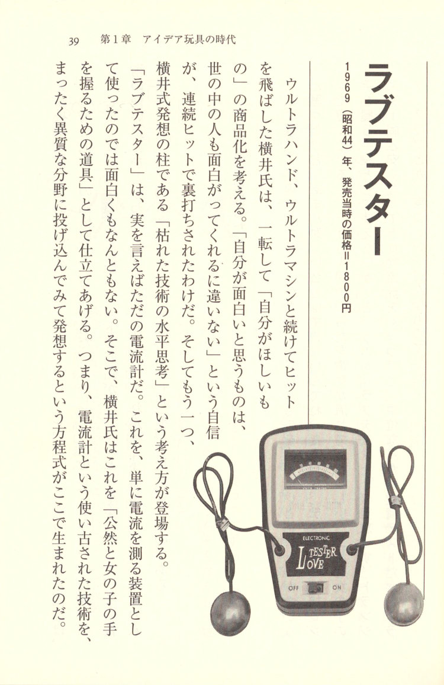
1969 (Showa 44). Price at time of release: ¥1,800
After the Ultra Hand and the Ultra Machine had both become hits, Yokoi turned his thinking to commercializing products that "he himself would find interesting" — things he felt confident that "others would find interesting too."
The idea soon took shape. One of the pillars of Yokoi's inventive approach is what might be called "lateral thinking with withered technology." And here, another such idea emerged — that of using a current-measuring device simply to measure the electrical current between a boy's and a girl's hands, tossing it into a completely unrelated field to see what would come of it. In other words, the Love Tester was born from the equation of taking an ammeter — an old, commonly available piece of technology — and throwing it into an entirely different domain to spark a new concept.
[IMAGE: Photograph of the Love Tester device — a small handheld electronic meter labeled "Electronic Love Tester" with two spherical electrodes on cords]
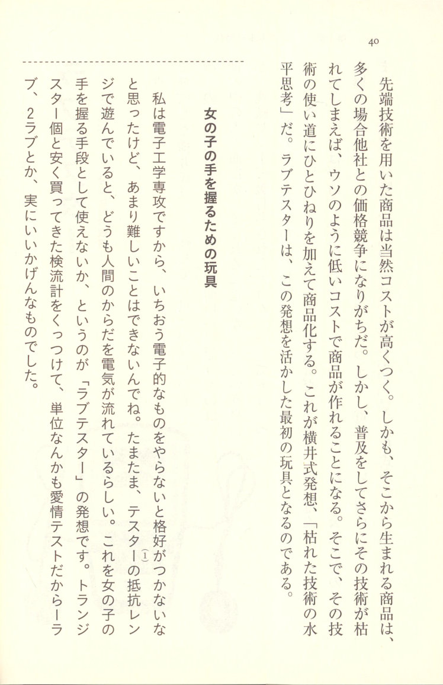
A toy for holding a girl's hand
Since I studied electrical engineering, I had a reasonable grasp of electronics — but I couldn't quite make anything stylish with it. And besides, it seemed that current was always flowing through the human body. So I thought: just leave a tester measuring the resistance of a girl's hand and let a transistor amplify it — that's the Love Tester concept right there. It's essentially a love test, after all. So I took a transistor radio, stuck a cheap ammeter to it, and there it was — units and all, it was a completely ridiculous thing. 1 Love, 2 Love, and so on.
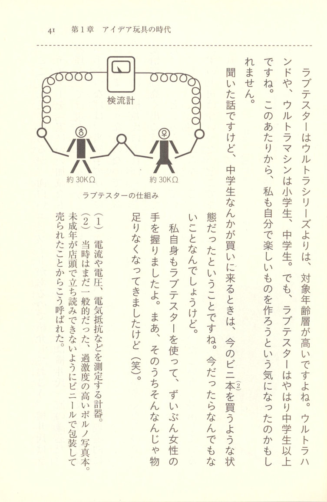
The Love Tester sits above the Ultra Series in terms of target age group, you see. The Ultra Hand and Ultra Machine were aimed at elementary school kids, middle schoolers. But with the Love Tester, I thought I'd like to make something that middle schoolers and above could enjoy too — that's probably why. I heard this story somewhere, but apparently middle schoolers were coming to buy them. That tells you something. When kids that age came to buy one, they were in no state to be seen doing so — that's just how it was, isn't it? Buying two of today's model at a time, anything goes. I used the Love Tester myself, and quite a few women ended up being short-changed by it. Well, I suppose that was inevitable. (Laughs)
(1) A meter for measuring electrical current, voltage, resistance, and so on. At the time it was still a general term; it later came to be called a "tester."
(2) A book of highly explicit photographs. At the time they were still sold openly at street stalls, wrapped in plastic and labeled so minors couldn't read them — which is why they came to be called *binibon* ("vinyl books").
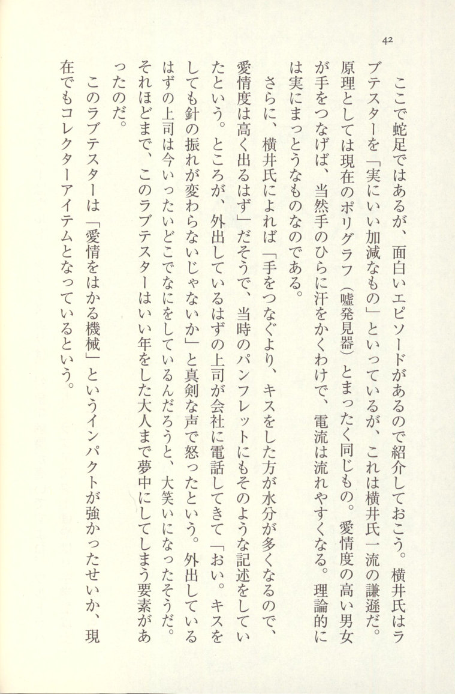
Furthermore, according to Yokoi, "kissing is even better than holding hands," because it brings more moisture into the circuit — which is why the pamphlet of the time included descriptions to that effect. The emotional readings would come out quite high, he says. However, when Yokoi tried getting his supervisors at the company to try it, they apparently called the office in a fury, shouting, "Hey! What do you think you're doing, sending people out to kiss each other?!" His supervisors at the time didn't understand what he was up to at all — which is quite funny when you think about it. And yet, it seems there were fully grown adults who became completely absorbed in this Love Tester to an almost embarrassing degree.
The Love Tester's impact as "a machine for measuring affection" was so strong that even today it remains a sought-after collector's item.
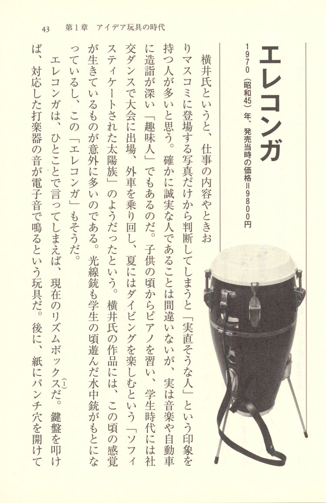
Eleconga
1970 (Showa 45) — Original retail price: ¥9,800
When you look at photos of Yokoi taken for work-related purposes, you can't help but form the impression that he is an extremely straightforward, earnest person. And indeed, there is no mistake that he is a sincere individual — but in reality, he had deep connections to music and cars. Having studied piano since childhood, he enjoyed scuba diving in his student days, and in those years the sensation among young people was the "Soft Dance" craze — driving to competitions, going abroad to ride in foreign cars, and behaving like a "sun tribe" in summer. Yokoi's works reflected this same spirit. His light gun was born from his student pastime of water pistols. And the Eleconga, simply put, is today's rhythm box. You press the keys and punch holes in paper, and the corresponding percussion instrument sounds in electronic tones — that is what this toy does. Later, by opening punched holes in paper—
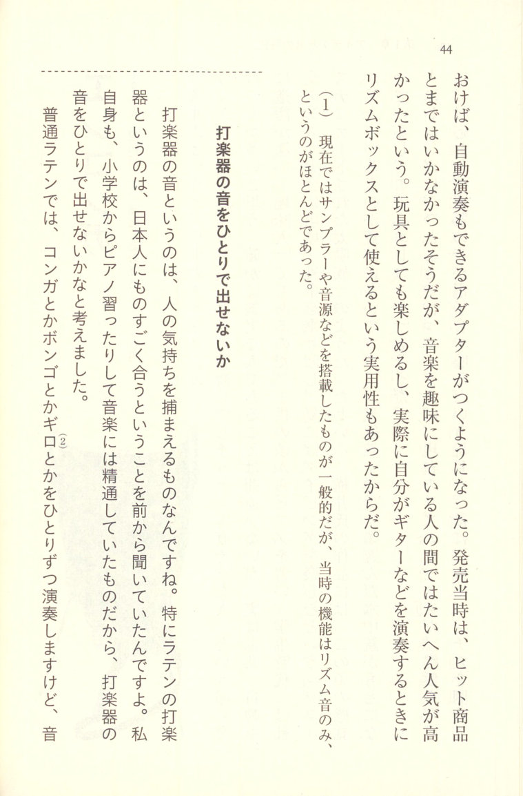
Can a Percussion Instrument's Sound Be Produced by One Person Alone?
The sound of a percussion instrument, you see, is something that captures people's feelings. Latin percussion in particular — I had been listening to it from before it became popular among Japanese people. I myself had been well-versed in music since piano lessons in elementary school, so I thought: can a percussion instrument's sound really be produced by a single person alone? In ordinary Latin music, you play the conga or the bongo or the güiro one at a time by yourself, but the sound
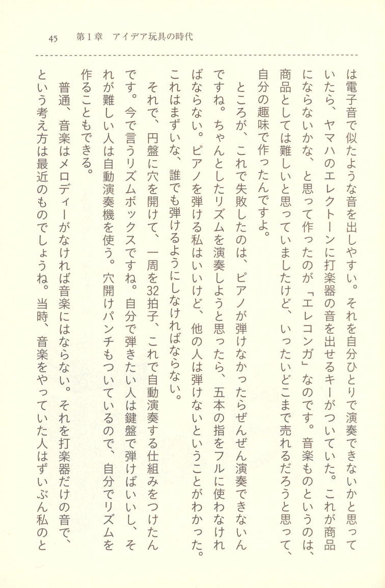
The reason it failed was that I had assumed that if someone could play piano, they would want to play proper rhythms too — but it turned out that people who can't play piano use all five fingers to the fullest when they play, and other people simply can't do it. So first of all, you have to be able to play piano. And with the disc, you punch holes in it and one revolution is 32 beats — this is the auto-play mechanism. People who want to play it themselves just need to play it on the keyboard, and those who find that difficult use the auto-play machine. You can also create your own rhythm, which is something you can do too.
Normally, music can't be music without a melody. People who were playing music at the time thought of it purely as their own personal sound — a percussion-instrument-only affair — and that way of thinking is the most recent kind, I suppose. Back then, people doing music
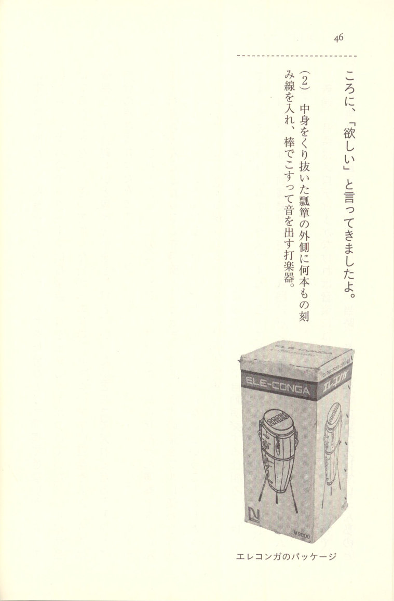
(2) A percussion instrument with several notched lines carved into the outside of a hollowed-out bamboo tube, played by scraping a stick across it to produce sound.
[IMAGE: Product box for the Ele-Conga, showing the packaging with an illustration of the instrument on the front, along with the Nintendo logo and price ¥3500]
Ele-Conga packaging
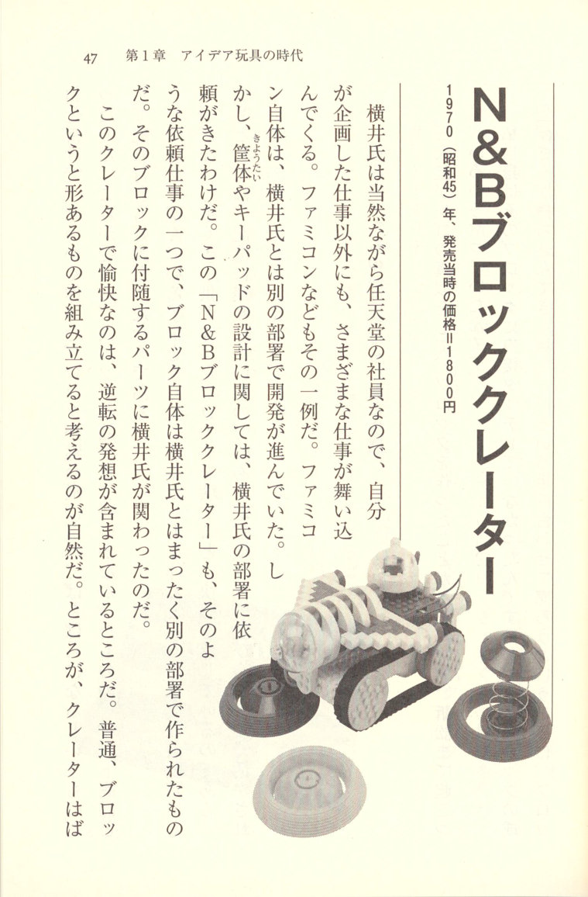
1970 (Showa 45). Price at time of release: ¥1,800
Since Yokoi was a Nintendo employee, all manner of work naturally came his way. In addition to the projects he himself had planned, development of things like the Famicom was also proceeding in other departments. The Famicom is one such example. However, the Famicom itself was being developed in a different department from Yokoi's. Yet this "N&B Block Crane" was also one of those jobs that came to him like a request — the kind of work that depended on him. The N&B Block Crane itself was something made entirely by a separate department, with no involvement from Yokoi. As for the block's design, that was handled by Yokoi's department.
What Yokoi himself found enjoyable about this crane was the reverse thinking behind it: that with the parts attached to the crane, you could naturally think of assembling the blocks yourself.
[IMAGE: Product photo of the N&B Block Crane toy, showing a construction-vehicle-style crane assembled from interlocking plastic blocks, with several loose block pieces displayed beside it]
But where a crane normally
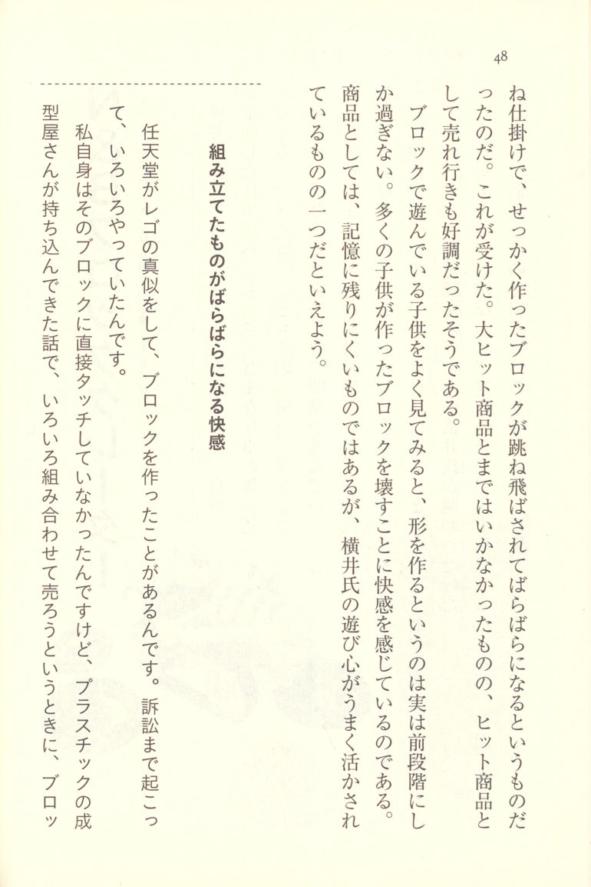
Looking at the blocks children made, what strikes you is that building shapes is actually a pleasure in itself — and this is something that Yokoi's playful spirit had cleverly tapped into at an earlier stage, and it is well reflected in the product. As a product, it is one in which it is difficult for children to remember the things they built, and there are those things made by children that no longer exist — but it can certainly be said to be one example of Yokoi's approach to play.
The Pleasure of Watching Something Built Fall Apart
Nintendo imitated Lego and tried making blocks themselves, and they actually did make them. It even came to lawsuits. I myself had no direct involvement with the blocks, but when it came to trying to sell them in various combinations using plastic block components, a block shop owner brought in their own blocks and —
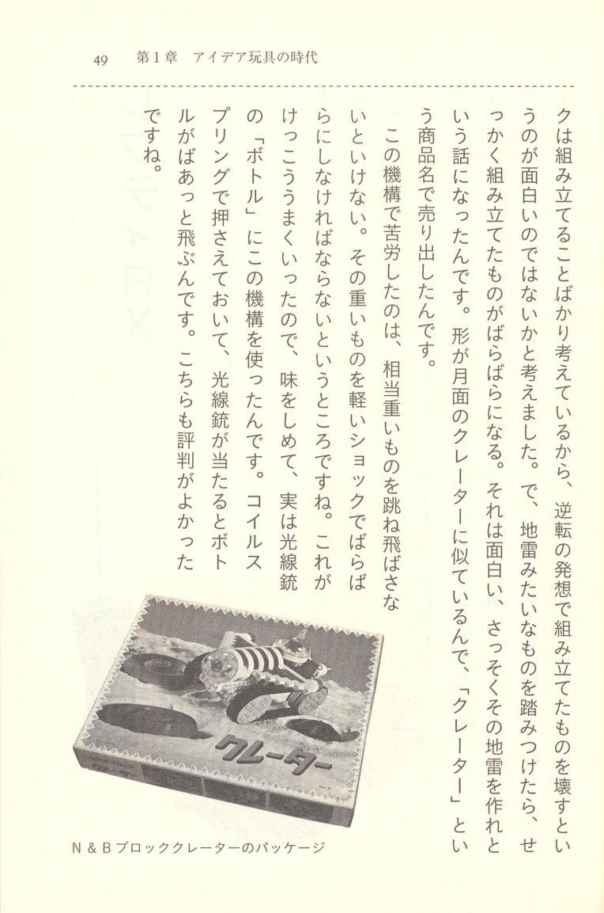
[IMAGE: Packaging for the N&B Block Crater toy, showing an illustrated scene on the box lid with the product name "クレーター" (Crater) printed on the front]
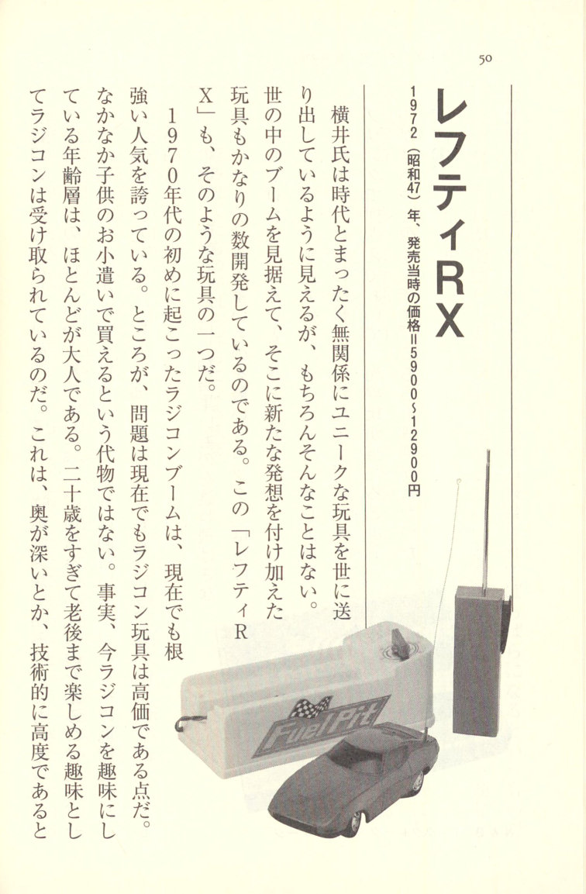
1972 (Showa 47). Price at time of release: ¥5,900–¥12,900
[IMAGE: Photo of the Lefty RX radio-controlled car toy, showing a sleek sports car model, a rectangular battery/fuel pack labeled "Fuel Pit," and a handheld remote control transmitter]
Yokoi may seem to have been sending entirely unique toys into the world with no connection to the trends of the times — but of course that's not the case. He would survey the booms sweeping the toy world, and then add fresh thinking of his own. This "Lefty RX" was one such toy, developed in the early 1970s at the height of the RC car boom.
The RC car boom, however, has deep roots that persist to this day — RC toys remain expensive, and as a hobby one can enjoy into old age, they attract strong popularity. The trouble is that children can't buy them with their pocket money. In fact, the demographic currently enjoying RC cars is mostly adults. People over twenty, even into old age. This is because RC is a sophisticated hobby — technically advanced, and
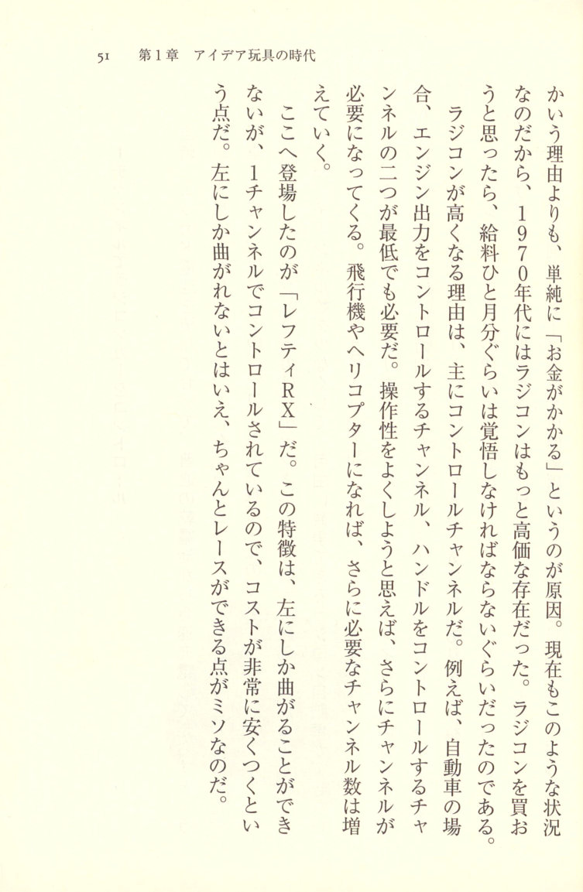
What appeared here was the "Lefty RX." Its distinguishing feature is that it can only turn left. Because it is controlled with just a single channel, the cost can be kept extremely low — though it must be said that being limited to left turns only and still being able to race is where the ingenuity lies.
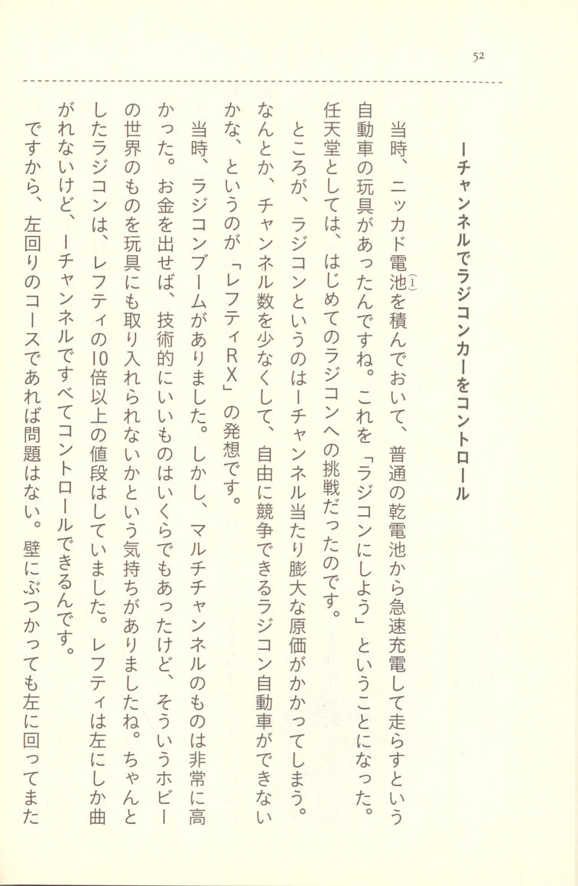
The thing is, with RC cars, the challenge for Nintendo was in the channels — the enormous cost per channel in an RC car made it impossible to build one that could compete freely on any number of channels.
As a toy, though, Nintendo's approach was to reduce the number of channels as much as possible, allowing the car to race freely. That was the idea behind the Lefty RX.
At the time, there was an RC boom going on. Multichannel units were extremely expensive. And honestly, I felt that those kinds of hobby-grade things were technically beyond what could be incorporated into toys. But if you were willing to spend the money, you could get there. That's what proper hobby gear was all about.
RC cars, you see, cost ten times more than toys at the time. The Lefty, however, could only turn left. So a single channel controls everything. It hits a wall and turns left again — left-turn courses are no problem at all. It just keeps going left.
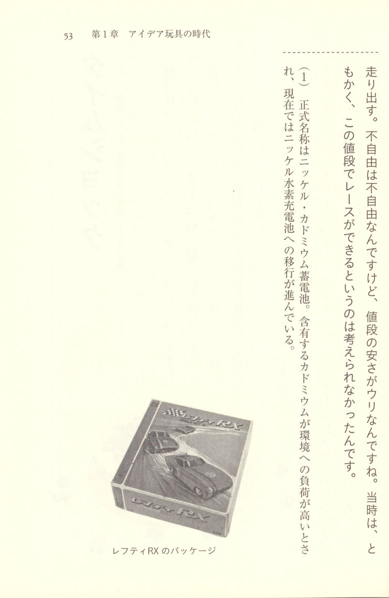
[IMAGE: Packaging box for the Lefty RX, showing an illustration of a racing car on the front]
*Lefty RX packaging*
(1) The formal name is nickel-cadmium battery. Because the cadmium they contain places a heavy burden on the environment, the transition to nickel-metal hydride rechargeable batteries is now well underway.
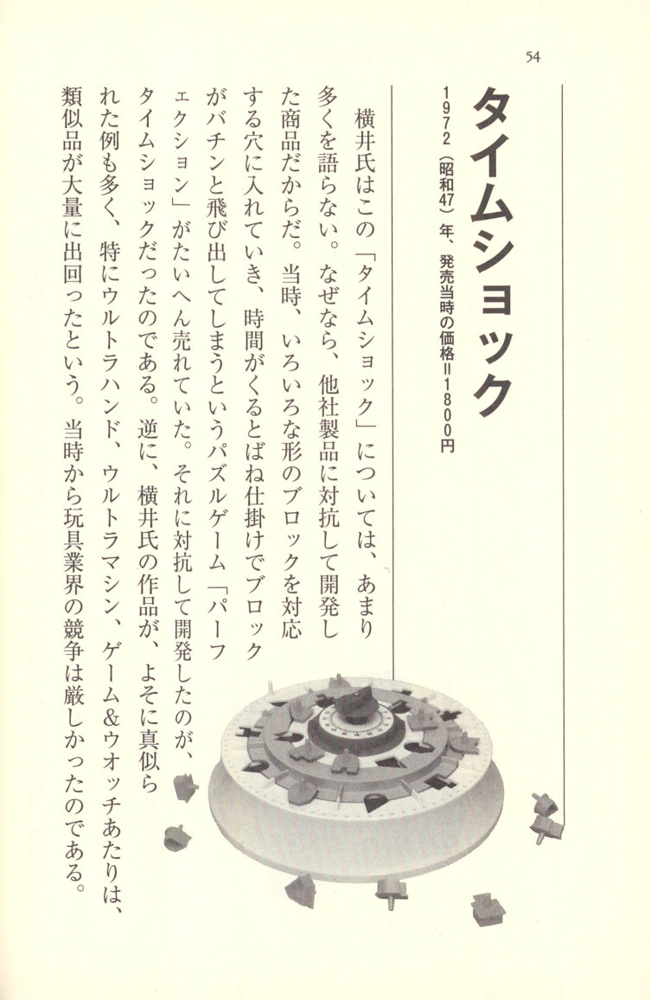
1972 (Showa 47). Price at time of release: ¥1,800
Yokoi himself has little to say about the Time Shock. The reason, he explains, is that it was developed in response to competing products — they were coming out with all sorts of block-based mechanisms, and Nintendo had to keep up. In doing so, blocks would fly out and the whole thing would end up being a puzzle game. The puzzle game they developed to counter this was "Time Shock" — and it sold quite well. Conversely, Yokoi's own creations were so widely imitated that products closely resembling them flooded the market in large numbers. This was especially true of the Ultra Hand, the Ultra Machine, and Game & Watch. The toy industry's competition was fierce even then.
[IMAGE: Photograph of the Time Shock toy, showing a circular tiered game unit with blocks arranged around its edges]
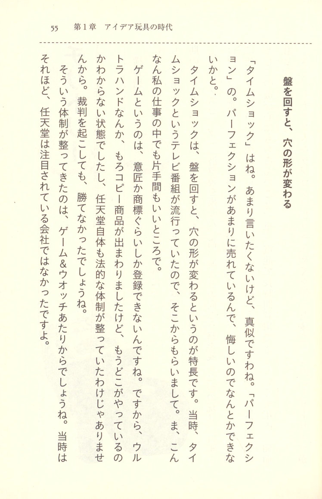
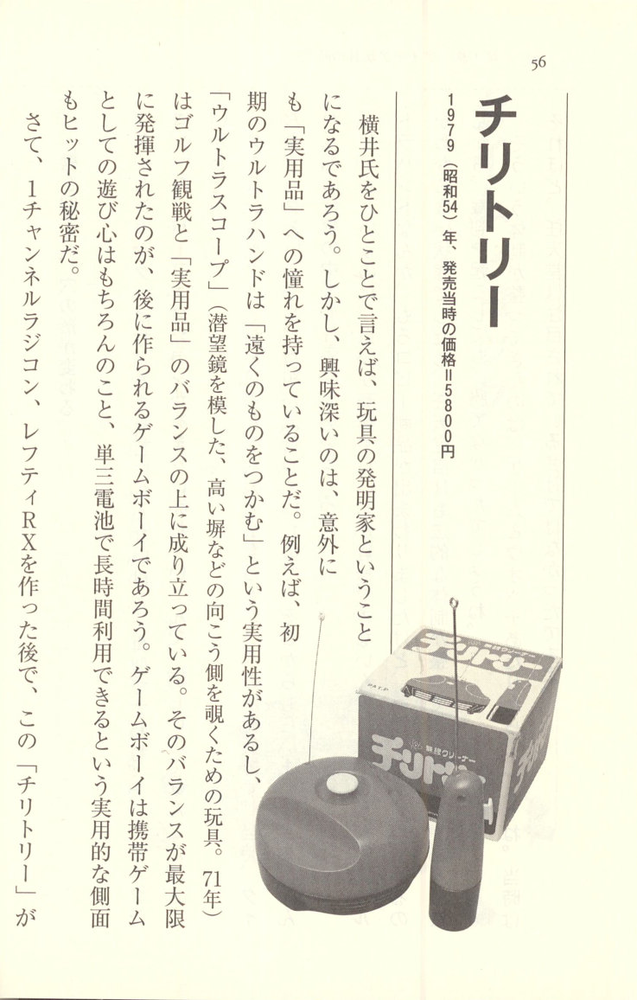
Chiri Tori
1979 (Shōwa 54). Price at release: ¥5,800
To speak of Yokoi in a word, he is an inventor of toys. What is interesting, however, is that he unexpectedly has a strong sense of practicality. For example, the early Ultra Hand was a toy aimed at "grasping things far away, high up on shelves" — in other words, it was a toy with a practical purpose in mind. And the Ultra Scope was modeled on a periscope, a telescope. The balance upon which it stands is truly impressive. That balance is most fully realized in the Game Boy, which was later developed as a game console — and the secret to its success as a game lies, of course, in that same quality as a toy: the fact that it can be used for a long time on a single AA battery, that practical side of things.
Now, after making the single-channel radio-controlled Lefty RX, this "Chiri Tori" —
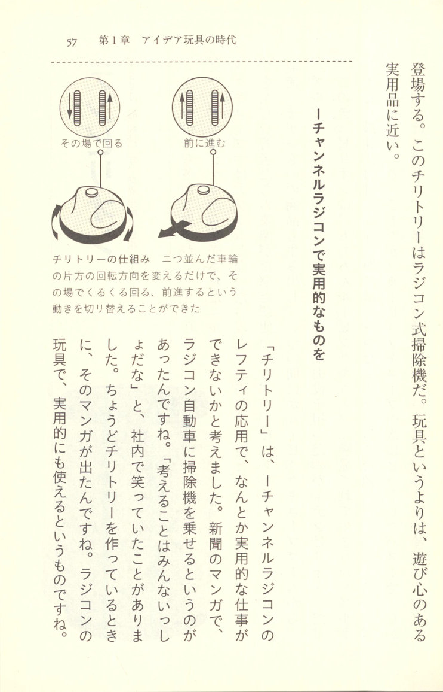
— Using the single-channel radio control for something practical
[IMAGE: Diagram showing how the Chiri Tori works: two illustrations of the device from above — one labeled "spins in place" and one labeled "moves forward" — with a caption explaining that by changing the rotational direction of one of the two side-by-side wheels, the device could switch between spinning on the spot and moving forward]
"With the Chiri Tori, I thought about what kind of practical work could be done using single-channel radio control. There was a manga in the newspaper about mounting a vacuum cleaner on a radio-controlled car, and I thought, couldn't we do something like that? 'That's a good idea,' people at the company laughed. 'The idea of thinking about it is fine, but there's no way you could actually put a vacuum cleaner on a radio-controlled car.' Around that time, a manga about the Chiri Tori came out inside the company. It's a toy, but it's also something you can actually use in a practical way. After all, it is radio-controlled."
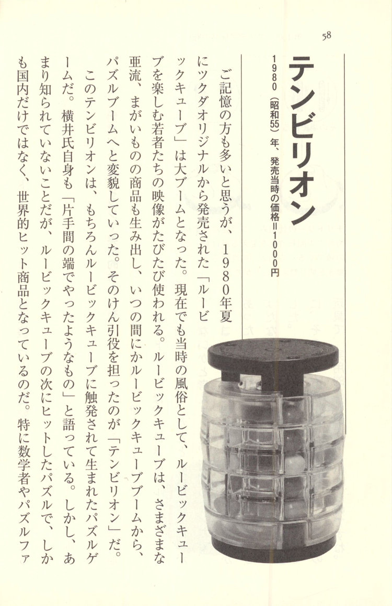
Tenbillion
1980 (Showa 55). Price at time of release: ¥1,000
As many readers will remember, in the summer of 1980 Nintendo released its own original product called the "Rubik's Cube" — the "Tenbillion." The Rubik's Cube became a massive craze at the time, and even today it is used in various ways as a cultural touchstone. The Rubik's Cube boom spawned all manner of spin-offs, and among the young people who enjoyed these puzzles, it also quietly gave rise to a subgenre of derivative products, one of which was the Tenbillion. This puzzle game rode the wave of the Rubik's Cube boom and underwent its own transformation. Yokoi himself describes it as "something I did single-handedly, on the side." It was, of course, a puzzle game inspired by the Rubik's Cube. However, the Tenbillion went on to become a hit not only in Japan but around the world — the next big thing after the Rubik's Cube. It was a particularly big hit among mathematicians and puzzle enthusiasts, and not just domestically —
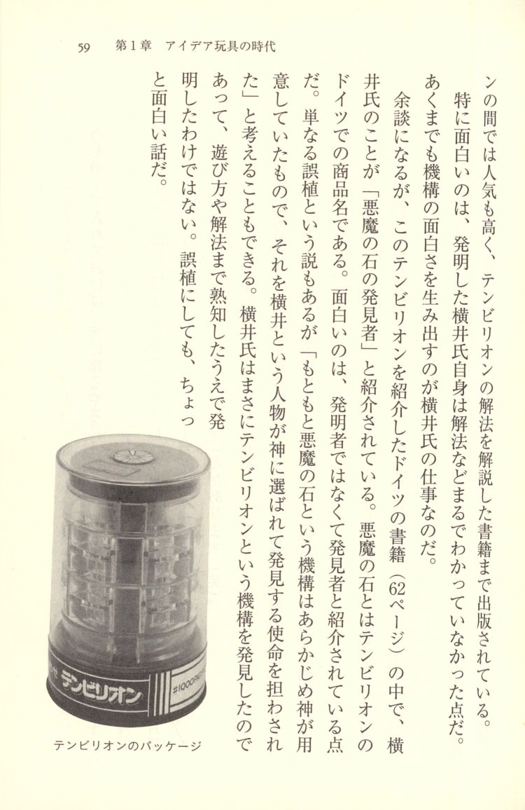
What makes this particularly interesting is that Yokoi himself did not know how to solve his own invention. That is the true charm of what Yokoi created. On the subject of the Tenbillion, Yokoi has been introduced in a German book on the puzzle (page 62) as "the discoverer of the Devil's Stone." The interesting thing is that the inventor is not Yokoi himself — the Tenbillion's inventor and the person introduced as the discoverer of the Devil's Stone are clearly different individuals. As an aside, the German product name for the Tenbillion is "Devil's Stone." What is amusing is that Yokoi is described as a "god chosen to discover the mechanism known as the Devil's Stone, entrusted with a divine mission." It is simply a misattribution, and one could argue that this is something that happens — but the fact that it was Yokoi, of all people, who was selected as this divine discoverer is precisely what makes the Tenbillion such a fascinating mechanism to have stumbled upon. Yokoi himself, having mastered the rules of play and the solutions, went on to invent the Tenbillion mechanism in a stroke of inspiration — and that, as misattributions go, is a rather delightful story.
[IMAGE: Photo of the Tenbillion packaging — the same barrel-shaped transparent puzzle in its retail box, with the product name "テンビリオン" and price ¥1,000 visible]
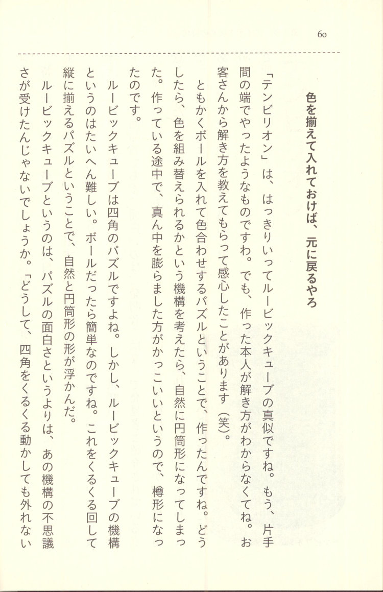
The Tenbillion is, simply put, an imitation of the Rubik's Cube. I myself don't even know how to solve it. And besides, the person who made it doesn't know how to solve it either. (laughs) Customers would come up to me and kindly teach me how, and I was genuinely moved — "So that's how you solve it!" The fact that customers were able to solve it is what makes it a proper puzzle. When I was working out the mechanism that would allow you to swap the balls around and match colors, naturally it took on a cylindrical shape. And once it was cylindrical, it bulged in the middle, so the finished shape turned out looking like a barrel. The round, barrel-like shape ended up looking rather elegant, I thought. That's how it came together.
The Rubik's Cube is a square puzzle. But the balls, being spherical, naturally suggest a cylinder. The Rubik's Cube mechanism involves spinning a cube around — which is tricky. A cylinder, on the other hand, naturally suggests rotation. And what is interesting about the Rubik's Cube, I think, is that it is a puzzle where, no matter how much you spin those square sections around, the mechanism holds together without falling apart — that mysterious quality of the thing is what
 p.64 makes it so fascinating, I think.
p.64 makes it so fascinating, I think.
At the time, I was also busy with Game & Watch, so I figured color-matching alone would be enough, and I had my staff work on developing it. When customers would say to me, "How do you solve this thing?" I would tell them, "Just sort the colors and put it back the way it was." That's an irresponsible answer, isn't it? (laughs) So eventually the thing absolutely stopped selling. And when customers would scatter it all around and then ask other customers, "Can you teach me how to solve it?" — and someone would figure it out and show them — and that solution even got broadcast on television. Really quite something. (laughs) And the person who figured it out did it entirely on their own, which is impressive — someone else taught them, they pretended they'd worked it out themselves, and it ended up on TV and all that.
The number of combinations is actually far greater than a billion!?
The name Tenbillion comes from the fact that the Rubik's Cube has something on the order of one hundred million or two hundred million combinations — so we thought, "let's calculate the number of combinations." And it turned out to be an astronomically large number — trillions upon trillions, that sort of order of magnitude. Far too large a number to even calculate properly. Something like tens of trillions. And so,
 p.65 we couldn't very well leave it at that, so we decided to round it down to at least ten billion. And that's what we were doing — rounding it down, you see, to a hundred billion. So we called it "Tenbillion." It's a pretty sloppy bit of naming, when you think about it — there's something charmingly off about the whole thing, isn't there? (laughs)
p.65 we couldn't very well leave it at that, so we decided to round it down to at least ten billion. And that's what we were doing — rounding it down, you see, to a hundred billion. So we called it "Tenbillion." It's a pretty sloppy bit of naming, when you think about it — there's something charmingly off about the whole thing, isn't there? (laughs)
[IMAGE: A magazine article spread in German titled "Die Tonnenstory," featuring a photo of Gunpei Yokoi in a suit holding the Tenbillion puzzle, alongside smaller images related to the product]
*A magazine article introducing the Tenbillion*